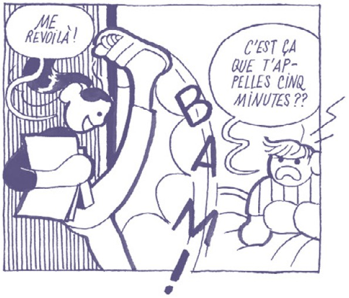
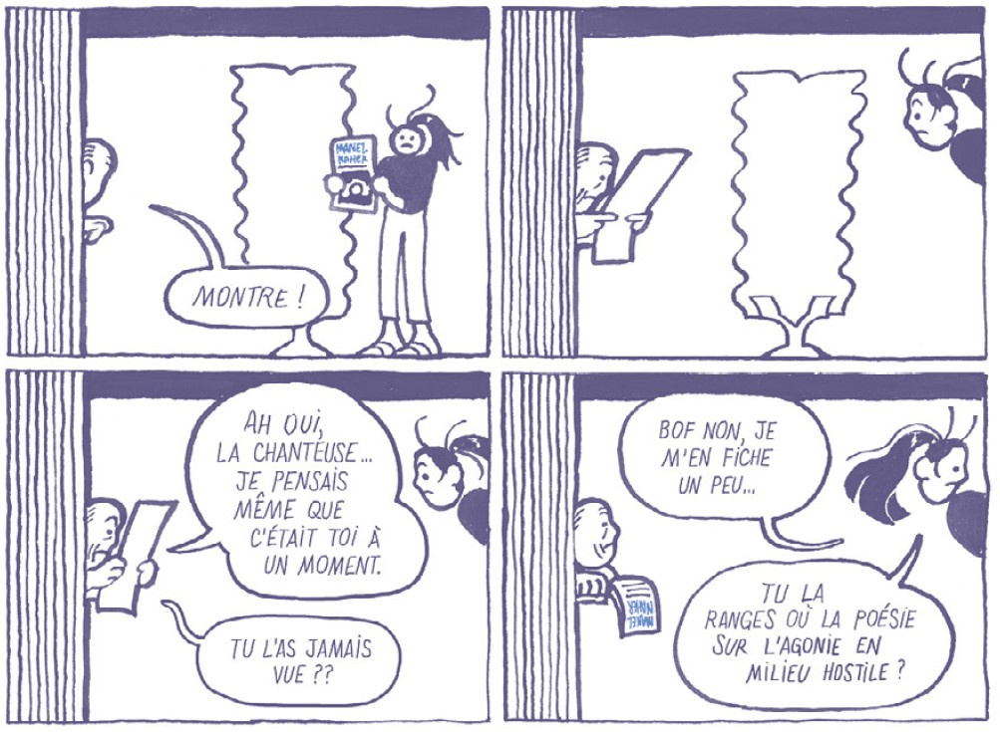
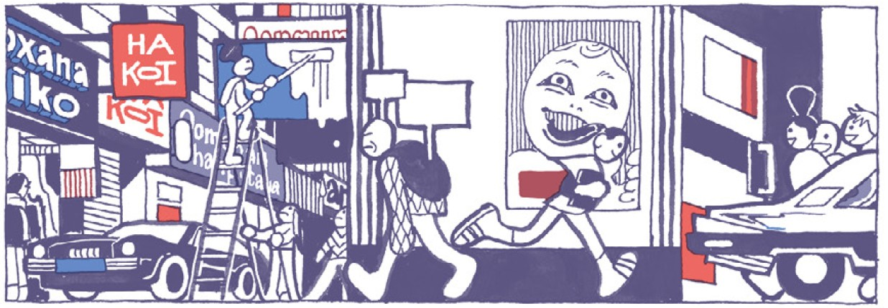

Manel Naher vit dans une ville étouffante. Si chacun y exhibe son nom pour ne pas être oublié, c’est parce que la mort sociale y coïncide avec la mort biologique. Peu sociable, elle trouve refuge dans une bouquinerie et rêve de s’en aller avec un de ses rares amis. Quand une chanteuse homonyme explose avec son nouveau single, occupant l’esprit de tout un tas de gens qui auraient plutôt pu penser à elle, les conséquences sont concrètes et rapides : crise cardiaque. Le traitement prescrit est clair : il est temps d’exister, de renforcer sa “présence” à tout prix.
Cette histoire bizarre imaginée par la française Léa Murawiec a déjà beaucoup pour me plaire telle quelle, mais alors ce dessin, ohlala. C’est vif, expressif et bourré d’idées. Le choix des couleurs est radical : pour l’essentiel noir (ou plutôt bleu) et blanc, complété d’un fort joli rouge pour les décors urbains. C’est peu dire que Léa Muraviec maîtrise son sujet et a digéré de multiples influences, de la BD franco-belge au manga, en passant par la BD indépendante et les courants les plus expérimentaux. L’autrice joue à sa guise avec l’agencement des pages, donne une consistance physique aux phylactères ou déforme les corps. Pour autant, cela ne nuit en rien à la lisibilité du récit, qui reste central.
Le fond n’est ainsi pas négligé au profit de la forme. En effet, cette dernière vient renforcer plutôt que diluer un cadre anxyogène, bruyant et frénétique. Manel Naher, soumise aux diktats d’un monde hurlant qui interdit la solitude, fait son possible pour survivre physiquement et psychologiquement. Et pas toujours avec succès. Le grand vide se prête à diverses interprétations, mais rien ne nous est imposé par l’autrice, qui refuse d’ailleurs de voir son histoire réduite à une simple analogie des réseaux sociaux. Il y a en effet davantage à tirer de cette BD qui m’a ébloui du début à la fin et tout au long de laquelle j’ai poussé tout un tas de “ooh”, de “aaah” et de “hihihi”.
Sortie : 2021
